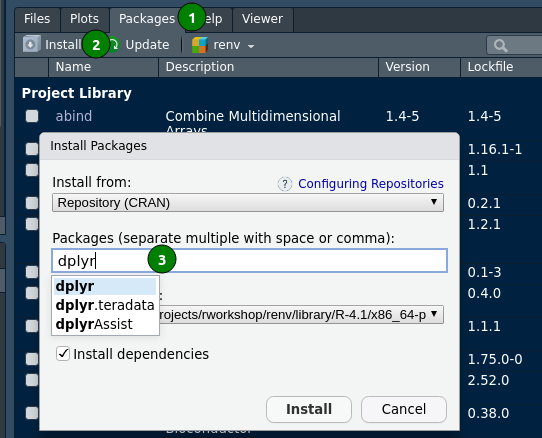

pkg_list <- c("tidyverse", "quarto", "rmarkdown", "palmerpenguins")
install.packages(pkg_list)Installation and setup
Install
R is available for free for Windows, GNU/Linux and macOS. The version required for this course is 4.3.1. As for now, the latest version is 4.3.2 but there is no need to update. Participants using earlier versions (in particular 4.1.2 and before) will not be able to complete all examples presented. Please update.
Install RStudio IDE
RStudio Desktop is an Integrated Development Editor wrapping and interfacing R that needs to be installed first. The free-version contains everything you need.
As for now, the latest version is 2023.06.2.+561. We recommend updating if you’re using older versions.
Install R packages from the CRAN
CRAN - the Comprehensive R Archive Network - is the general package repository for R.
The bottom-right panel holds five tabs.
- Files
- Plots
- Packages
- Help
- Viewer
Click on the Packages tab (1.) and select the select the Install button (2.). Type dplyr in (3.). You will see the word auto-completion that helps.

R packages that will be required for the workshop
To prepare, please install the following on your machine:
Install latest version of RStudio, v2022.07.0-548 or later
-
Install these R packages:
Install [Quarto]
- Install latest version of Quarto (v1.0.36 or greater)
- After installing Quarto, open the terminal in RStudio and:
- See this guide for details on using the terminal
- Install/Update TinyTeX for PDFs with
quarto install tool tinytex - Install/Update Chromium with
quarto install tool chromium
About the materials
This source code and license for all of the materials found on this website can be found on Github .